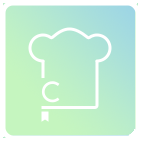

Cookbook App Concept
The Cookbook App Concept (or on the report at the bottom, the "Kitchen Organizer App") is an idea that I developed during my third year at SBU, since I was living on my own and had to manage my own cooking. This was mainly due to how inedible the food on campus was, and being forced on campus after COVID had settled down meant dealing with that again. As someone who values variety in their diet, I needed a way to explore different dishes from different cuisines as well as keep track of my current ingredient inventory easily and accurately. Although I did not work on the idea during that year, it laid the groundwork for when I had the chance to next semester in my senior year, from my Interdisciplinary Senior Project course. I took the opportunity in that class to utilize the content and spend time on thinking through the app, which resulted in the work you see below.
I wanted the app to seem user-friendly and intuitive to use, ideally something that a new user could begin taking advantage within minutes of installing it. Thus, I chose a light green and blue palette, as I felt that would be the least jarring and feel more organic. The logo below uses this combination and just has some simple chef's hat imagery as well as a bookmark to imply its purpose.

Before composing the prototype wireframes for the app, I thought about the pain points the target audience would have, and how the program's interface and purpose would satisfy those points. These features would become the goals of the app, listed here: to allow users to maximize use of their ingredients, keep track of what is in stock, compose and sort custom recipes, generate automated recipe plans by day(s)/week based on inventory, and search for other recipes by other users. For a complete explanation of the app's functionalities, see the project report below.

Due to the fact that the problems I mention above are faced by many people, there are many other apps that are similar in
varying degrees. Thus, I also conducted a competitor analysis to better identify where my idea could succeed and not simply
join a saturated market (see report for complete comparisons). My takeaway from my research was that there were key features
that had to be included in the final product, such as: recipe scanning, a self-learning search function, multi-platform access,
display of trending recipes, inventory management, and a smooth, modernized user interface.
I provide an explanation of the importance of these features as well as a proposed financial plan for developing the project
in my full report.
Full Report
Figma File